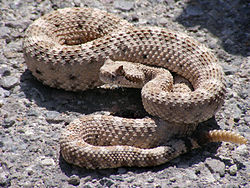

Las serpientes no poseen extremidades pero eso no les impide poder alcanzar a sus presas, las serpientes son criaturas perfectamente adaptadas para poder moverse rapidamentesin el uso de extremidades, esto se demuestra ya que hay razas de serpientes capzas de:nadar ,escalar,excabar,escalar y hay algunas que pueden incluso planear.
Este movimiento se produce generalmente a la ondulacion del cuerpo enpezando en la cabeza hasta la cola , pero hay serpientes que han desarrollado sistemas propios de movimiento, las especies deserticas como la serpiente cornuda, son capaces de desplazarse levantando la cabeza y moviendo la parte trasera del cuerpo hacia delante, para después levantar la zona media del cuerpo y moverla, este movimiento siempre tiene dos partes del cuerpo en contacto con el suelo y una en el aire.En la gran mayoria de serientes sus propias escamas les inpiden moverse hacia atrás
El esqueleto tiene muchas vértebras, más de 100 por lo general y llegando en algunas especies a más de 400 vértebras, lo que hace que sean muy flexibles. La variación el número de vértebras está relacionada con la longitud de la serpiente, pero también con su ecología, por ejemplo, especies constrictoras cuentan con un mayor número de vértebras
Los huesos de la mandíbula superior están débilmente unidos al resto del cráneo y el cuadrado puede moverse libremente y posee potentes músculos refractores, lo que permite una enorme abertura de las mandíbulas y la deglución de grandes presas enteras. Los dientes son agudos y curvados hacia atrás
La visión de las serpientes es limitada, pero no impide la detección de movimiento. Algunas serpientes poseen fosetas loreales, capaces de detectar el calor. No obstante eso no indica que tengan visión infrarroja, ya que la información va a áreas del cerebro distintas a las de la visión. Simplemente saben si cada cosa está más caliente o menos.
El sentido del oído de las serpientes es muy limitado ya que los órganos auditivos han degenerado. Esto hace poco probable que las serpientes puedan oír con claridad sonidos transmitidos por el aire, pero sin duda son sensibles a las vibraciones del suelo, trasmitidas mediante los huesos de la mandíbula.
Una serpiente huele a través de su nariz; la lengua pasa las partículas de aire al órgano de Jacobson en la boca para su examen. Otra característica de su lengua es que termina en dos ramificaciones, por lo que se denomina bífida
La piel de la serpiente está recubierta por escamas. La mayoría de las serpientes utilizan escamas de la parte ventral para desplazarse, aferrándose con ellas a las superficies. Sus párpados se encuentran permanentemente cerrados, pero son en realidad escamas transparentes. Las serpientes cambian de piel periódicamente y a diferencia de otros reptiles, el cambio de piel es realizado en una pieza, como si tirara de una media. Esto se hace a medida que el animal crece y además para reparar heridas y librarse de parásitos externos.
El aparato respiratorio y las vísceras están muy modificados ya que el cuerpo tubular de la serpiente requiere que todos los órganos sean alargados y delgados, como en especial los pulmones, riñones, hígado, corazón y testículos. El pulmón izquierdo suele estar reducido o a veces incluso puede faltar, y las demás vísceras pares suelen situarse a diferentes niveles en cada lado.
Muchas especies usan veneno para inmovilizar o matar a sus presas. El veneno es una saliva modificada y se inyecta gracias a los colmillos. Los más especializados son muy largos y huecos, y actúan como verdaderas agujas hipodérmica que se clavan profundamente e inyectan el veneno.
El veneno de las serpientes es con frecuencia específico para sus presas, y su papel como mecanismo defensivo es secundario. El veneno, al igual que todas las secreciones salivales, posee agentes que realizan una predigestión de los alimentos; por tanto, incluso las serpientes "no venenosas" pueden causar daños en los tejidos.
El veneno está constituido por una compleja mezcla de proteínas que actúan como neurotoxinas, hemotoxinas, citotoxinas, bungarotoxinas y muchas otras sustancias que pueden afectar al organismo de diferentes maneras; casi todos los venenos de serpientes poseen hialuronidasa, un enzima que destruye el ácido hialurónico, que es el cemento que mantiene unido el tejido conjuntivo que, por tanto se disgrega facilitándose así la rápida difusión del veneno.